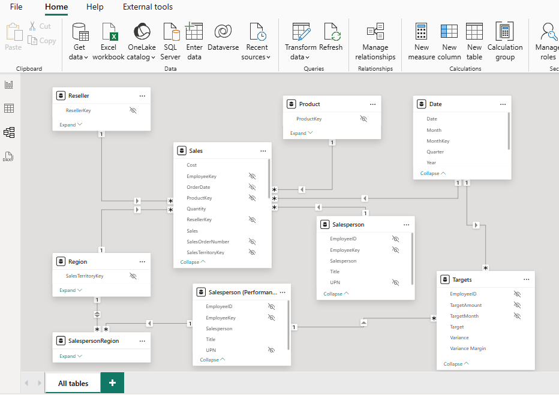

Power BI Dashboards
This page displays some Power BI projects I have worked and practiced on, including the .pbix file, source data, and screenshots.
Adventure Works Anaysis
This page displays some Power BI projects I have worked and practiced on, including the .pbix file, source data, and screenshots.
February 2025
Download PBIX File Download CSV Data
